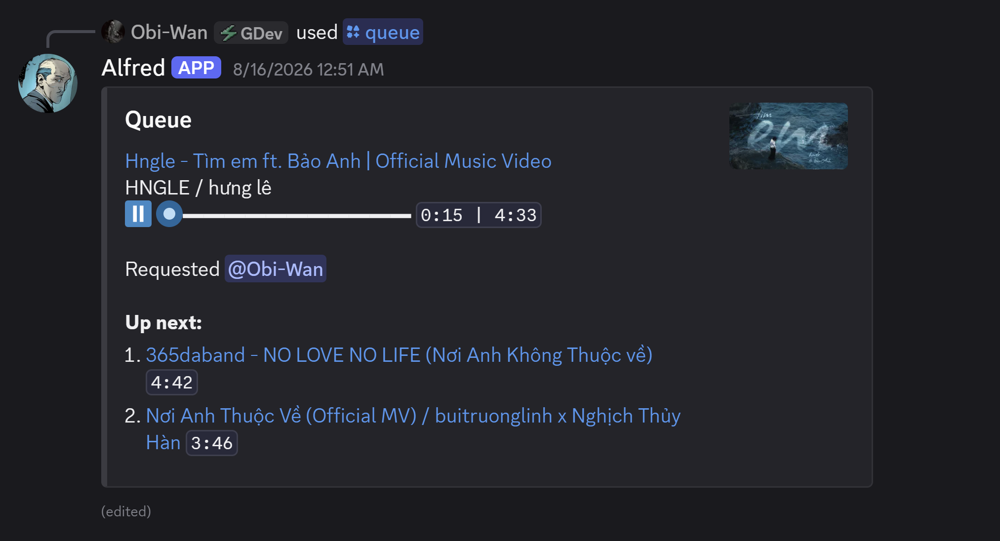
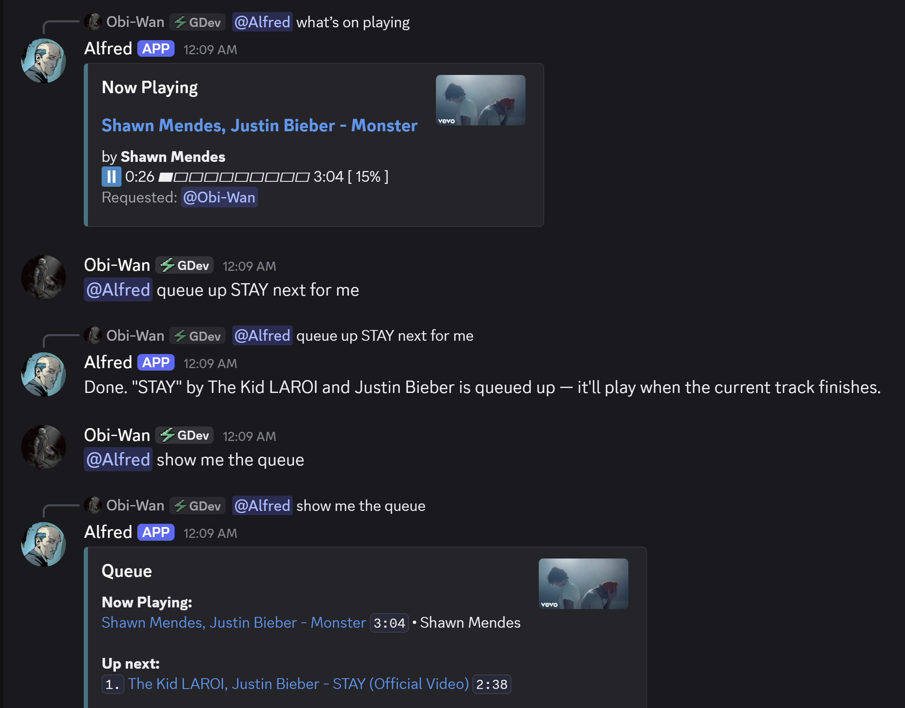

Music in the voice channel you are already in. Play from YouTube, Spotify, SoundCloud and Deezer while you game and talk, from a bot you host yourself.
You are in voice, mid-match, talking over the music. Queue a song with one command and it keeps playing while you play.
YouTube, Spotify, SoundCloud and Deezer. Tracks, albums, playlists and direct URLs.
Suggestions appear in the slash command box, by track, artist, album or playlist.
Pause, skip and loop from its buttons. The card updates in place.
Alfred answers when asked and never posts on its own.
Disconnects as soon as the last listener leaves the channel.
The member list shows what is playing, right under Alfred's name.
Everything Alfred posts is a card: what is playing, how far in, and what comes next.

The current track with its progress, and the tracks lined up after it.

Ask what is on and Alfred answers with the card, in the same channel.
/play joins your voice channel on its own. Loop and shuffle are options on it, not extra commands.
Queue a track, playlist or URL
Find a track with autocomplete
Show what is playing
See what is up next
Move to the next track
Drop a track from the queue
Disconnect and clear the queue
Options on /play and /search
Music in your voice channel. Nothing extra in your text channels.
Alfred handles your commands. A separate Lavalink node does the audio, so a long track never slows the bot down.
A slash command or a button press on the player card, in Discord.
The bot keeps the queue and player state, and tells the audio node what to play.
A separate Java node finds the track and decodes it.
Audio streams straight to your voice channel, never through the bot.
Docker Compose starts everything Alfred needs. Use uv if you want to work on the code.
# 1. Prepare the config files cp .env.example .env cp lavalink/application.yml.example lavalink/application.yml # 2. Set DISCORD_TOKEN and CIPHER_PASSWORD in .env # On Linux, first run only: chown -R 322:322 lavalink/logs lavalink/plugins # 3. Start yt-cipher, Lavalink and the bot docker compose up -d
After editing the code, rebuild with docker compose up -d --build bot. Running on a VPS? Follow the deploy guide.
# Lavalink needs Java 21+ winget install --id Microsoft.OpenJDK.21 -e # Terminal 1: the Lavalink node .\scripts\lavalink.ps1 # Terminal 2: the bot uv sync --frozen uv run alfred
Checks: uv run pytest and uv run ruff check .
clientId and clientSecret are set.
deezer: true in the same edit that fills masterDecryptionKey, or Lavalink will not start.
Deployment, how the code is put together, and the decisions behind it.